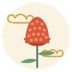

福利 · 澳洲全国
孩子上托儿所、课后托管，政府帮付多少？
活动已结束。可向主办方查询下期安排。
Child Care Subsidy（CCS）：政府按家庭收入，替你付一部分托儿费，直接付给托儿机构。
谁能领
照顾 13 岁或以下、还没读中学的孩子（有例外）。
用的是政府批准的托儿服务，并且是由你负责付托儿费。
要符合居住规定和孩子的疫苗接种规定。新来澳洲的居民可能要先等一段时间，见“新来澳洲的人，哪些福利要等？”。
能补多少
补多少看四件事：家庭收入、托儿类型和孩子年龄对应的每小时上限、你和伴侣的工作／学习等“认可活动”、孩子人数。
官网写明：从 2026 年 1 月 5 日起，符合资格的家庭每两周至少能有 72 小时的补贴托儿时间。
家里有超过一个 5 岁或以下的孩子在托儿，补贴可能更高。具体数字用官网的 Payment Finder 估算，不要听传闻。
相关
家里孩子读小学以上，还可以看“孩子运动、才艺，政府给 $50 券”和“抚养孩子的家庭补助”。